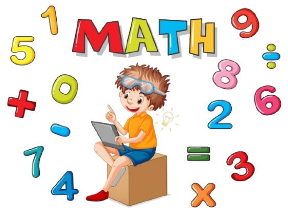
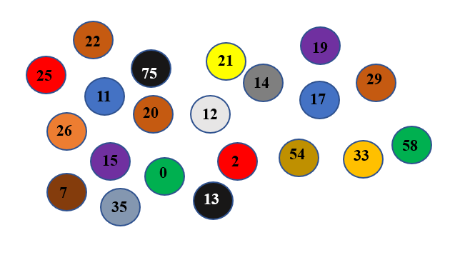

Fundamentación teórica
La innovación en los métodos de enseñanza se ha vuelto esencial para proporcionar a los estudiantes herramientas que vayan más allá del conocimiento teórico, permitiéndoles desarrollar competencias prácticas que les serán útiles en diversos contextos, donde a través de la interacción con robots y la programación, los estudiantes adquieren habilidades clave, como resolución de problemas y creatividad siendo algo fundamental para enfrentarse al mundo laboral. Razón por la cual, se considera que su inclusión en los procesos formativos puede mejorar la motivación y aportar al pensamiento matemático de los estudiantes, puesto que la robótica vincula diversas áreas del saber cómo la electrónica, física y matemáticas en un entorno práctico y atractivo para su desarrollo (Rosero, 2024).
En efecto, la inclusión de la robótica y la programación en la educación es mucho más que una simple herramienta tecnológica, puesto que sirve para transformar la forma en que los estudiantes captan el aprendizaje.
Ejemplo
"Camino de colores"
Se debe seguir un patrón de colores, identificando los círculos de colores correctos, para luego sumar todos los números que se encuentran en los círculos del patrón correcto.
Como se puede observar, tenemos una serie de círculos de colores dibujados en una hoja, donde cada uno tiene un número, lo cual se debe seguir un patrón como:
- Círculo 1: Rojo
- Círculo 2: Azul
- Círculo 3: Verde
- Círculo 4: Amarillo
- Círculo 5: Rojo
- Círculo 6: Azul
- Círculo 7: Verde

El patrón que deben seguir es: Rojo, Azul, Verde, Amarillo, Rojo, Azul, Verde.
Sumamos los números de los círculos del patrón a seguir que son: 25 + 11 + 0 + 21 + 2 + 17 + 58 = 134